scripts/fig_ring.py asserts the sums).Two icosahedral pairs whose Dehn invariants cancel in the whole but at no edge, and what a stand-in piece for a centre pyramid must carry
scripts/audit.py recomputes the numbers of the text and tables and reads the study logs (AUDIT OK at build); figcheck run at build. Tone softened (DICTO 21 Nov).Cut a solid into pieces and move them: the volume stays, and so does a second quantity built from the edges and the angles between faces. DICTO calls it the solid's packet. Pieces that fill space together must bring packets that add up to nothing. This paper shows that adding up to nothing is not enough: the packets must cancel at every edge, and for two promising icosahedral pairs they never can.
This paper establishes three things: why two icosahedral pairs whose packets cancel exactly still cannot fill space, with any of a long list of helpers; which centre pyramids of the classical solids have a cancelling partner at all; and what a stand-in piece, a scutoid in particular, would have to carry to let a centre pyramid fill space.
The starting point. The octet is the model everyone trusts. A regular tetrahedron of edge a has packet 6a ⊗ arccos(1/3); a regular octahedron of edge a has 12a ⊗ (π − arccos(1/3)) = −12a ⊗ arccos(1/3) modulo ℚπ. Two tetrahedra and one octahedron cancel, and indeed they fill space together. DICTO's idea is to read every piece this way: a solid "carries its packet of information", and a mixture can fill space only if the packets it brings cancel. His proposal was to look for a complementary stand-in for each centre pyramid (the pyramid with its apex at a solid's centre and one face as base), not necessarily octahedral, that helps it fill space as the octahedron helps the tetrahedron.
The result. A screen of all 47 centre pyramids found two pairs that look like new octets (§4): twelve dodecahedron centre pyramids against one truncated icosahedron, and twenty icosahedron centre pyramids against one truncated dodecahedron, all at equal edges. The packets cancel exactly, the proportions are whole numbers, and twelve is the number of pentagons of the truncated icosahedron. Nevertheless (Theorem 4) neither pair fills space, for a reason that the octet hides: around each edge the angles must close a full turn, and the irrational parts must cancel inside that one turn. For these pieces the smallest ring in which they cancel is 3π (Figure 1).
The consequence. Glued, each pair becomes one solid of packet zero (§5), and the question comes back changed: not which piece cancels the packet, since none needs to, but which shape can close the rings that the glued solid leaves open. DICTO proposed scutoids. §6 shows why scutoids escape the obstruction of Theorem 4 and what faces and angles one would be forced to have.
How it was found. On 21 November 2026 DICTO proposed the packet reading and the stand-in search; the screen of §4 ran that morning and ranked the two icosahedral pairs first; the same day the angle count of §3 closed both, and DICTO proposed scutoids, which led to §6. The cubic cancellations of the screen turned out to be known honeycombs cut into pyramids; the icosahedral ones are new cancellations, and they fail to fill space.
How results are marked. By hand: a proof on paper. Exact: proved by a computation in exact arithmetic (number fields, formal radicals, fractions), with scripts and logs in the study folders. Computed: floating point or PSLQ, not a proof. Cited: a published theorem used as stated. Throughout φ = (1 + √5)/2 and
α = arctan φ ≈ 58.2825°, β = arccos(1/√6) ≈ 65.9052°, γ = arccos √(2/3) ≈ 35.2644°.
α is half the dodecahedron's dihedral angle, 3π/4 − β half the icosahedron's, and 2γ = arccos(1/3) the regular tetrahedron's dihedral angle.
Two tools do all the work. The first says that a periodic filling forces the packets to cancel in the whole. The second looks at one edge: the pieces around it must close exactly one turn.
Definition. The packet of a convex polyhedron P is its Dehn invariant D(P) = Σe ℓe ⊗ θe in ℝ ⊗ℚ (ℝ/ℚπ), the sum over the edges e, with ℓe the length and θe the interior dihedral angle (Dehn [1], in the tensor form of Jessen [3]). Dehn proved that cutting and rigid motion do not change it [1]. A piece is neutral if its packet is zero; every piece whose dihedral angles are all rational multiples of π is neutral (cubes, prisms, the rhombic dodecahedron, the rhombic triacontahedron and their centre pyramids).
Proposition 1 (periodic packet balance). By hand, from Dehn's theorem [1]. Let a tiling of space by convex polyhedra be invariant under a lattice Λ of translations, with finitely many orbits of tiles, and let t1, …, tN be one tile from each orbit. Then D(t1) + … + D(tN) = 0. In particular, if the tiles are n copies of P and m copies of H per period (up to motions), then n D(P) + m D(H) = 0.
Cut one period box out of the tiling: the pieces of tiles inside it, moved back by lattice steps, rebuild exactly one tile of each kind. So the tiles of one period and the box have the same packet, and a box has none.
Proof. Let Π be a fundamental parallelepiped of Λ. The convex polytopes t ∩ Π, over the tiles t meeting Π, cut Π into finitely many pieces. Each such t is λ + ti for one i and one λ ∈ Λ; moving t ∩ Π by −λ gives ti ∩ (Π − λ), and since the translates of Π tile space, these pieces cut each ti into pieces with disjoint interiors. So Π is scissors congruent to the union of t1, …, tN, and D(Π) = Σ D(ti) by Dehn's theorem. Each of the three classes of four parallel edges of Π has one length ℓ and angles θ, π − θ, θ, π − θ, so it contributes ℓ ⊗ 2π = 0, and D(Π) = 0. ∎
For tilings that are not periodic, the classical statements are Debrunner's [5] (a polyhedron that tiles space by congruent copies has zero Dehn invariant, so by Sydler [4] it is scissors congruent to a cube) and Lagarias and Moews's [6] in higher dimensions. We read both only through their citations and record (§8); their statements for several prototiles in given frequencies were not checked, so nothing below depends on them. Proposition 1 is needed only to explain why the screen of §4 looks for cancellations; Theorem 4 does not use it.
Lemma 2 (angles round an edge). Cited from DICTO's #44 [8, Lemma 1], where it is proved; it is the edge-counting step behind Debrunner's theorem [5]. Let space be tiled by convex polyhedra, finitely many meeting any bounded set, and let e be an edge of a tile. For all but finitely many points x of e, the dihedral angles of the tiles that have x on an edge add up to 2π, or to π when one tile has x inside a face.
A tiling by finitely many kinds of convex pieces, each used at finitely many scales and in any position (mirror images allowed), is locally finite, so Lemma 2 applies to it. We call the multiset of angles at such a point a ring.
Lemma 3 (independence). Exact (study packet-leads-tiling, scripts/angles.py). π, α, β and γ are linearly independent over ℚ.
None of the three angles is a fraction of a half turn, and no combination of them is either; so a sum of these angles is a whole turn only when each of α, β and γ appears with total weight zero.
Proof (as run in the study). Put x = e2iα, y = e2iβ = (−2 + i√5)/3 and w = e2iγ = (1 + 2√2 i)/3, all in F = ℚ(i, √5, √2). If aα + bβ + cγ = (p/s)π with integers a, b, c, then xasybswcs = 1. The norm from F to ℚ(√−5) sends x and w to 1 and y to y4, so y4bs = 1; if b ≠ 0 then β/π is rational and 2 cos β an algebraic integer, but its minimal polynomial is 3x² − 2; so b = 0. The norm to ℚ(√−2) gives c = 0 in the same way (minimal polynomial 3x² − 8), and then xas = 1 gives a = 0 (2 cos α has minimal polynomial 5x⁴ − 20x² + 16). ∎
So a ring of angles qjπ + ajα + bjβ + cjγ closes only if Σ aj = Σ bj = Σ cj = 0 and Σ qj is 2 (or 1, with one tile's face on the edge). Table 1 lists the angles. Each one is proved exactly from the coordinates of the solids (study packet-leads-tiling, scripts/angles.py).
| piece | edge | count | angle | degrees |
|---|---|---|---|---|
| dodecahedron centre pyramid | base–side | 5 | α | 58.2825 |
| side–side | 5 | 2π/3 | 120 | |
| truncated icosahedron | hexagon–hexagon | 30 | 3π/2 − 2β | 138.1897 |
| pentagon–hexagon | 60 | 3π/4 − α + β | 142.6226 | |
| icosahedron centre pyramid | base–side | 3 | 3π/4 − β | 69.0948 |
| side–side | 3 | 2π/5 | 72 | |
| truncated dodecahedron | decagon–decagon | 30 | 2α | 116.5651 |
| triangle–decagon | 60 | 3π/4 − α + β | 142.6226 | |
| dodecahedron | all | 30 | 2α | 116.5651 |
| icosahedron | all | 30 | 3π/2 − 2β | 138.1897 |
| TID | square–hexagon / square–decagon / hexagon–decagon | 60 each | 5π/4 − β / π/2 + α / 3π/4 − α + β | 159.0948 / 148.2825 / 142.6226 |
| TO | square–hexagon / hexagon–hexagon | 24 / 12 | π/2 + γ / π − 2γ | 125.2644 / 109.4712 |
| TCO | square–hexagon / square–octagon / hexagon–octagon | 24 each | π − γ / 3π/4 / π/2 + γ | 144.7356 / 135 / 125.2644 |
The packets of the two pairs follow at once (unit edges; rational angles drop out): D(dodecahedron centre pyramid) = 5 ⊗ α and D(TI) = 60 ⊗ (−α + β) + 30 ⊗ (−2β) = −60 ⊗ α, so 12 pyramids cancel one TI; D(icosahedron centre pyramid) = −3 ⊗ β and D(TD) = 30 ⊗ 2α + 60 ⊗ (−α + β) = 60 ⊗ β, so 20 pyramids cancel one TD. Twelve and twenty are the numbers of pentagons and triangles of the two truncated solids.
Twelve pyramids and one truncated icosahedron have packets that cancel exactly, yet no arrangement of them, with or without a long list of helpers, fills space. Around every edge of these pieces, the angles can only balance in a ring one and a half turns round.
Theorem 4 (cancelling packets that cannot fill space). By hand; checked by exact enumeration (study packet-leads-tiling, scripts/angle_test.py).
(a) No tiling of space contains a dodecahedron centre pyramid or a truncated icosahedron if every tile is one of these two, or a dodecahedron, an icosahedron, a truncated octahedron, a truncated cuboctahedron, a truncated icosidodecahedron, or a convex polyhedron whose dihedral angles are all rational multiples of π. Each kind may occur at finitely many scales, mirror images are allowed, and the tiling need not be face-to-face.
(b) The same holds word for word with the icosahedron centre pyramid and the truncated dodecahedron in place of the dodecahedron centre pyramid and the truncated icosahedron.
(c) For the pairs alone, the smallest ring of their angles in which the irrational parts cancel has sum exactly 3π, and it is attained: 2α + 2(3π/4 − α + β) + (3π/2 − 2β) = 3π in (a), 2(3π/4 − β) + 2(3π/4 − α + β) + 2α = 3π in (b) (Figure 1).
scripts/fig_ring.py asserts the sums).The proof counts the angles round one edge of each piece in turn. The weights of α and β must come to zero, and every way of making them zero costs more than a full turn. Pieces that can never close one of their edges cannot be in the tiling, and removing them takes away what the next piece needed.
Proof of (a). Fix a tiling as in (a) and a ring at a generic point of an edge (Lemma 2). Count its angles from Table 1: n1 pyramid base angles α; n3 TI hexagon–hexagon angles 3π/2 − 2β; n4 TI pentagon–hexagon and n9 TID hexagon–decagon angles 3π/4 − α + β; n5 dodecahedron angles 2α; n6 icosahedron angles 3π/2 − 2β; n7 TID square–hexagon angles 5π/4 − β; n8 TID square–decagon angles π/2 + α; and any number of angles that are rational multiples of π or carry only γ (pyramid side edges, rational pieces, TO, TCO), each with nonnegative π-part. By Lemma 3,
(α) n1 + 2n5 + n8 = n4 + n9, (β) n4 + n9 = 2n3 + 2n6 + n7,
and since the irrational parts then cancel, the sum of the ring equals its π-part, which must be 2π or π.
Step 1: no truncated icosahedron. If a TI occurs, take the ring at its hexagon–hexagon edge, so n3 ≥ 1. By (β), n4 + n9 ≥ 2, and the π-part is at least (3/2)n3 + (3/4)(n4 + n9) ≥ 3/2 + 3/2 = 3 > 2. This ring cannot close, so no TI occurs; from now on n3 = n4 = 0.
Step 2: no truncated icosidodecahedron. If one occurs, take the ring at its square–decagon edge, n8 ≥ 1. By (α), n9 ≥ n8 ≥ 1; by (β), n7 + 2n6 = n9. The π-part is at least (1/2)n8 + (3/4)n9 + (5/4)n7 + (3/2)n6 = (1/2)n8 + (3/4)n9 + (3/4)(n7 + 2n6) + (1/2)n7 = (1/2)n8 + (3/2)n9 + (1/2)n7. If n7 ≥ 1 this is at least 1/2 + 3/2 + 1/2 = 5/2; if n7 = 0 then n9 = 2n6 ≥ 2 and it is at least 1/2 + 3 = 7/2. Either way it exceeds 2, so no TID occurs; n7 = n8 = n9 = 0.
Step 3: no pyramid, dodecahedron or icosahedron. Now (α) reads n1 + 2n5 = 0 and (β) reads 0 = 2n6, so n1 = n5 = n6 = 0 in every ring: none of these pieces can have its base edge, or any edge, closed. ∎
Proof of (b). The same with n1 icosahedron pyramid base angles 3π/4 − β, n3 TD decagon–decagon angles 2α, n4 TD triangle–decagon angles 3π/4 − α + β and the rest as before. Lemma 3 gives (α) n4 + n9 = 2n3 + 2n5 + n8 and (β) n1 + 2n6 + n7 = n4 + n9. Step 1: at a TD decagon–decagon edge, n3 ≥ 1, so n4 + n9 ≥ 2, and the π-part is at least (3/4)(n4 + n9) + (3/4)n1 + (3/2)n6 + (5/4)n7 ≥ (3/4)(n4 + n9) + (3/4)(n1 + 2n6 + n7) ≥ 3/2 + 3/2 = 3. Step 2: with no TD, at a TID square–hexagon edge, n7 ≥ 1; (β) gives n9 = n1 + 2n6 + n7 ≥ 1 and the π-part is at least (3/4)n9 + (3/4)(n1 + 2n6 + n7) + (1/2)n7 + (1/2)n8 = (3/2)n9 + (1/2)n7 + (1/2)n8 ≥ 2, with equality only if n9 = n7 = 1 and n8 = 0, when (α) reads 1 = 2n5, impossible; so no TID. Step 3: (β) reads n1 + 2n6 = 0 and (α) 0 = 2n5. ∎
Proof of (c). For the pair of (a) alone, Step 1's equations read n1 = n4 = 2n3, and any ring through a pyramid base edge or a TI edge has n3 ≥ 1; its sum is n3 · 3π + n2 · 2π/3 ≥ 3π, with n2 the pyramid side angles. The ring n1 = n4 = 2, n3 = 1 attains it. For (b), n1 = n4 = 2n3 and the sum is n3 · 3π + n2 · 2π/5. ∎
Check. The exact enumeration of the study lists every nonnegative integer ring of at most 2π, in strict mode (only the listed pieces) and in rational mode (rational-angle pieces of any kind), and removes pieces one by one until nothing changes. It removes the pieces in the order of the proof (TI, then TID, then the pyramid), keeps the truncated octahedron, the truncated cuboctahedron and the cube (which tile among themselves and never touch the lead pieces), and passes its controls: the octet and the cube alone survive, while the dodecahedron alone, the regular tetrahedron alone and the B3 permutohedron alone (the case of #100 [9, Theorem 1.2]) are removed.
Corollary 5 (edge by edge). By hand, from Lemmas 2 and 3. In any tiling by pieces whose angles lie in ℚπ + ℤα + ℤβ + ℤγ, the weights of α, β and γ cancel separately in every ring, and every ring sums to at most 2π. The global balance of Proposition 1 is the sum of these local balances, weighted by edge lengths; a cancellation that needs more than 2π in every ring, as in Theorem 4 (c), is global only and cannot occur in a tiling.
Here is the fence round the idea. The octet passes both tests: at a tetrahedron edge the rings 1 + 1 (on an octahedron's face, π) and 2 + 2 (2π) close. The B3 permutohedron, with all permutations of (±1, ±2, ±3) as corners, is the opposite near miss: its packet is zero, yet it fails the ring test at its rectangle–octagon edge (#100 [9]). The pairs of Theorem 4 fail in a third way: each piece has a packet, the packets cancel, and the rings still cannot close.
We weighed the packet of each of the 47 centre pyramids of the classical solids against 80 pieces. Three need no partner, ten have one, seventeen need two, and seventeen have none in the library.
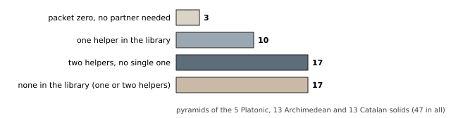
scripts/fig_screen.py.Proposition 6 (the screen). Exact, except where marked (study packet-screen). Take the 47 centre pyramids of the 5 Platonic, 13 Archimedean and 13 Catalan solids (one pyramid per face type; Platonic and Archimedean solids at edge 1, each Catalan solid the polar reciprocal of its edge-1 Archimedean dual in the midsphere) and the library of 80 pieces formed by these pyramids, the 31 solids and the square and pentagonal antiprisms. Allow every helper to be scaled freely.
(i) Exactly three pyramids have packet zero: those of the cube, the rhombic dodecahedron and the rhombic triacontahedron.
(ii) Ten pyramids have a single helper in the library whose packet cancels theirs, in 26 pyramid–helper pairs in all.
(iii) Seventeen more have no single helper but have two-helper sets, 71 in all.
(iv) For the remaining seventeen the library has no cancelling set of one or two helpers: 10 Catalan pyramids (all except those of the rhombic dodecahedron, the rhombic triacontahedron and the tetrakis hexahedron), the 2 snub cube and 2 snub dodecahedron pyramids, and the 3 rhombicosidodecahedron pyramids. Computed: this part rests on the independence over ℚ, modulo π, of the 32 basis angles of the screen, tested by PSLQ at 300 digits with coefficients up to 10⁴.
All 97 cancellations of (ii) and (iii) are proved by exact identities and do not depend on the independence test.
The method keeps every number exact: edge lengths and angle cosines live in number fields, every relation between angles is proved as an identity, and every cancellation is a determinant that vanishes exactly.
Evidence. Every piece is built with exact coordinates: the snub cube in ℚ(t) with t the tribonacci constant, the snub dodecahedron in ℚ(ξ) with ξ³ − 2ξ = φ, the rest in ℚ(√2, √5) and ℚ(21/4), every face checked exactly for planarity and convexity. The 91 distinct dihedral angles have exact minimal polynomials of their cosines; 9 are rational multiples of π (decided exactly by the test that cos(2πk/n) has degree φ(n)/2 and its minimal polynomial divides Tn − 1, reused from the gap study of the same day). Among the other 82 and π, a basis of 32 angles was chosen greedily with PSLQ, and each of the 50 relations found was proved exactly as the identity Π (cos θj + i sin θj)kj = (−1)p in a formal radical ring (an identity there holds for every choice of the square roots). A single helper H cancels a pyramid P exactly when the coefficient vectors of their packets are negatively proportional, proved by 2 × 2 minors; two helpers by 3 × 3 minors. Controls pass: the cube, rhombic dodecahedron and rhombic triacontahedron pyramids have packet zero; tetrahedron + octahedron cancel 2:1 at equal edges; the cuboctahedron's two pyramids cancel 1:1; the icosidodecahedron's two pyramids do not; tetrahedron + cube do not; and for all 31 solids the face-weighted sum of the centre pyramids' packets equals the solid's packet, which checks every relation used. Table A1 (appendix) gives the verdict for each pyramid.
The classes. The 97 cancellations fall into four kinds.
The ten Catalan pyramids of (iv) each carry a packet on an angle that only their own solid has, and the solid's packet is F times the pyramid's (F faces), in the same direction, so it cannot help. Regular prisms are neutral by inspection (every angle π/2 or (n − 2)π/n) and may join any mixture without changing its balance; they were listed, not screened.
Glue the twelve pyramids onto the twelve pentagons of the truncated icosahedron and the packet is gone: one solid, balanced. What is left to do is to close its edges.
Proposition 7 (the compounds Fullerene Star and Rollerball). Exact (study scutoid-stand-in, scripts/compounds.py). Let the Fullerene Star be the truncated icosahedron of edge a with a dodecahedron centre pyramid of edge a on each of its 12 pentagons, and the Rollerball (DICTO's name) the truncated dodecahedron of edge a with an icosahedron centre pyramid of edge a on each of its 20 triangles. Both have packet zero. Their edges are those of Table 2; the two reflex edge types (angle greater than π) cannot lie inside another piece's face and must be closed by a full ring of other pieces.
| compound | edge | length | count | angle | degrees | ring needs | on a face needs |
|---|---|---|---|---|---|---|---|
| Fullerene Star | hexagon–hexagon | a | 30 | 3π/2 − 2β | 138.1897 | π/2 + 2β = 221.8103° | 2β − π/2 = 41.8103° |
| pyramid side–hexagon (reflex) | a | 60 | 3π/4 + β | 200.9052 | 5π/4 − β = 159.0948° | impossible | |
| pyramid side–side | R | 60 | 2π/3 | 120 | 4π/3 | π/3 | |
| Rollerball | decagon–decagon | a | 30 | 2α | 116.5651 | 2π − 2α = 243.4349° | π − 2α = 63.4349° |
| pyramid side–decagon (reflex) | a | 60 | 3π/2 − α | 211.7175 | π/2 + α = 148.2825° | impossible | |
| pyramid side–side | R | 60 | 2π/5 | 72 | 8π/5 | 3π/5 |
Proof. Gluing removes the pentagon edges (pyramid base angle α plus TI pentagon–hexagon angle 3π/4 − α + β makes the reflex angle 3π/4 + β) and leaves the TI hexagon–hexagon edges and the pyramid side edges. At length a the packet is 30 ⊗ (−2β) + 60 ⊗ β = 0; at length R the angle is rational. For Rollerball: 30 ⊗ 2α + 60 ⊗ (−α) = 0. ∎
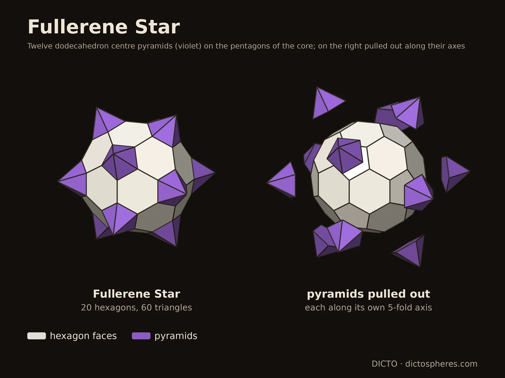

Theorem 4 concerns tilings by the separate pieces with the listed helpers; it does not forbid Fullerene Star or Rollerball with a helper of another kind. Neither compound is one of DICTO's named solids (the concordance's TI Star puts pyramids on all 32 faces of the truncated icosahedron, not on the 12 pentagons only).
Remark 7a (the Fullerene Star and the OG share 80 planes). Exact in ℚ(√5) (study fullerene-star-og, og_vs_fullerene_star.py). DICTO noticed the shared count of 80. The Fullerene Star lies on the same 80 planes as DICTO's Ogdoecontahedron (OG, #31 [14]): the 60 face planes of a pentakis dodecahedron and the same 20 hexagon planes. In the OG the six-fold corners of the pentakis dodecahedron lie above the hexagon planes and are cut off, which leaves 60 kites and 20 hexagons, 102 corners, a convex solid. In the Fullerene Star they lie below, so nothing is cut: 60 triangles and 20 hexagons, 72 corners, 150 edges. Its pyramids stand at 2.227, which is 2.118 times the greatest height Hc = 1.0515 (in the frame where the truncated icosahedron has edge 2) at which the solid on these planes stays convex, so the Fullerene Star is non-convex (hexagon–triangle dihedral 200.91°, reflex). It is therefore not of the OG's combinatorial type, and it is not a member of the family of #39 [15] (its corner counts differ from those of that family's nine solids).
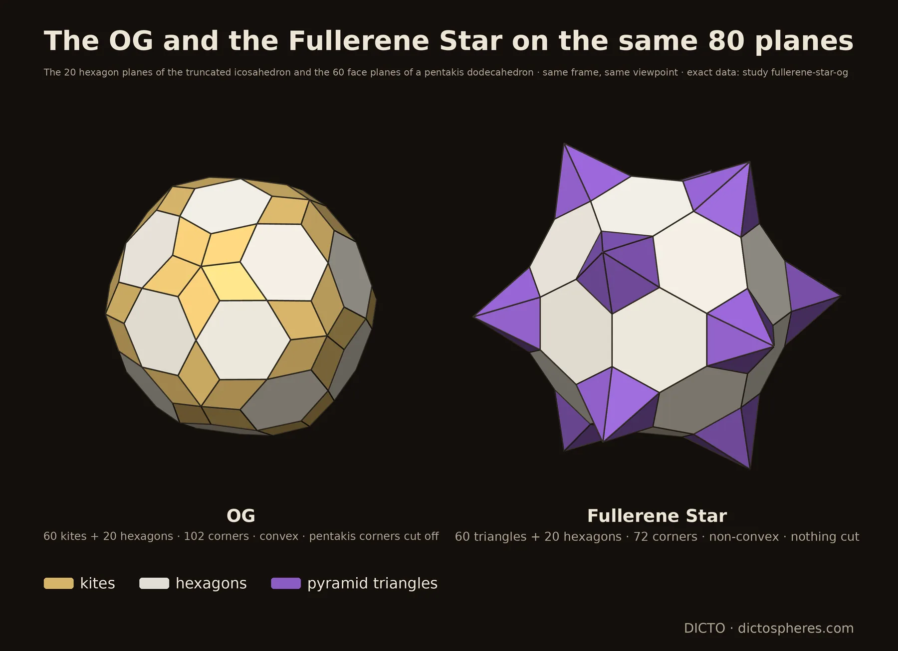
A scutoid is a column between two parallel faces whose outline changes on the way up. Unlike a prism it can carry irrational angles and still have no packet, so Theorem 4 does not reach it. We show what such a stand-in for Fullerene Star is forced to look like; whether one exists is open.
A scutoid here is a convex or non-convex polyhedron with two parallel end faces, all other faces lateral (meeting both end planes or ending at a vertex between them), and at least one Y-vertex between the end planes; the shape and the name are due to Gómez-Gálvez and co-workers [10], and DICTO's scutoid papers build them with flat faces [11].
Lemma 8 (a scutoid's side plane). By hand. A lateral face plane meets the two parallel end planes at angles t and π − t; so the edges of one lateral plane on the two end faces add (ℓtop − ℓbottom) ⊗ t to the packet. A scutoid can therefore have edges at irrational angles and packet zero, while a prism with rational angles has neither.
Lemma 9 (one helper of some shape always exists). By hand; the numbers computed (study scutoid-stand-in, scripts/round_trivial.py). For any bounded polyhedron C there is one polyhedron K such that copies of C and K tile space periodically, one K per C. For Fullerene Star of edge 1 one such K is a ball with flat faces: stand Fullerene Star on a five-fold axis, take the slab between a plane at height zc = 2.8842 (halfway between the top pentagon plane, 2.3274, and the spike tip, 3.4410) with the spike tips above it added at the points of a square lattice of period 7.8819, and its translate by 7.8819 downwards; the slab tiles by translations and contains Fullerene Star, and K is the slab minus Fullerene Star (vol Fullerene Star = 62.9508, vol K = 426.7088).
Proof. Put C in the interior of a cube Q; Q tiles space by translations, and Q minus the interior of C is one polyhedron K. The slab construction makes K simply connected. ∎ So the number of helper kinds is no obstacle, and packets never stop it: Fullerene Star has packet zero, so any K of this kind has packet zero too (the argument of Proposition 1, with Fullerene Star and K cut into convex pieces). The whole question is the shape.
Lemma 10 (the vertex ledger and the forced faces). Exact (study scutoid-stand-in, scripts/round_local.py; angles as pπ + bβ with π and β independent). Let v be a vertex of the truncated icosahedron inside Fullerene Star, of edge 1.
(i) Seen from v, Fullerene Star fills a spherical quadrilateral with corners 138.19°, 200.91°, 200.91°, 120° and area exactly 5π/3 (α and β cancel); what it leaves is the quadrilateral X with corners 221.81°, 159.09°, 240°, 159.09° and area 7π/3. A pyramid's apex cone has solid angle π/3.
(ii) Around a pyramid side–side edge the three pyramids cannot all have their truncated icosahedron at the same end, since three cones of 5π/3 exceed 4π; only mixed orientations remain.
(iii) In a face-to-face tiling by copies of Fullerene Star and of one helper K (mirror images allowed): two Fullerene Star never share a pyramid side triangle (its base edge would carry 2(3π/4 + β) > 2π), so every such triangle (legs √3 φ/2, base 1) is a face of K. Two Fullerene Star can share a hexagon only with the edge types swapped, hexagon–hexagon edge against reflex edge, and then each of the six edges leaves a wedge of exactly β − π/4 = 20.9052°. The two hexagons at a hexagon–hexagon edge are never both shared with Fullerene Star copies; the hexagons of Fullerene Star form the dodecahedral graph, whose largest independent set has 8 nodes, so at least 12 of the 20 hexagons of each Fullerene Star are faces of K, and K has a regular hexagon face.
(iv) Suppose K's dihedral angles lie in the alphabet pπ + bβ with b ∈ {−1, 0, 1}, p a multiple of 1/4 when b = ±1 and of 1/12 when b = 0 (the side-plane angles that close Fullerene Star's rings). Then each 20.9052° wedge of (iii) is one edge of one K, between its spike-triangle face and a regular-hexagon face at dihedral exactly β − π/4. This angle carries β, so it is not a rational lateral angle, and one of the two faces is an end face of the scutoid.
If a scutoid stands in for Fullerene Star face to face, it must have one face shaped like the pyramid's side triangle and one shaped like the hexagon, meeting at a knife edge of about 21°.
Proof. (i) A spherical polygon's area is its angle sum minus (n − 2)π: (3π/2 − 2β) + 2(3π/4 + β) + 2π/3 − 2π = 5π/3, and 4π − 5π/3 = 7π/3. The apex cone: 5 · 2π/3 − 3π = π/3. (ii) 3 · 5π/3 = 5π > 4π. (iii) The wedge is 2π − (3π/2 − 2β) − (3π/4 + β) = β − π/4. The two hexagons at a hexagon–hexagon edge, both shared, would put angle (3π/2 − 2β) + 2(3π/4 + β) > 2π at it. The independent-set bound was checked exactly. (iv) The ring fillings of a 20.9052° wedge in the alphabet were enumerated exactly; the only one is a single K edge of that angle. ∎
At v the leftover of (iii) is then a spherical hexagon L with corners 159.09°, 240°, 20.91°, 159.09°, 240°, 20.91° and area 2π/3. L is not a triangle (as a Y-vertex of one scutoid would be), and it lies in no closed hemisphere bounded by one of its sides (as an end-face corner would); so at least two helper copies meet at v.
Remark 11 (a near miss that closes every ring). Exact rings and counts; the placement computed. The rhombohedron S with all twelve edges a and dihedral angles π/2, 3π/4 − β and π/4 + β, four of each, closes every edge ring of Fullerene Star exactly: hexagon–hexagon + 2(π/4 + β) = 2π, reflex + (3π/4 − β) + π/2 = 2π, and pyramid side edges three at a time. Its packet is zero, and 15 copies per Fullerene Star balance the counts exactly (60 angles of each kind). Yet placed around one Fullerene Star edge to edge at full length, every pair of placements at slots that meet at a truncated-icosahedron vertex overlaps (a float separating-axis test over all 512 pairs, worst separation −0.2432). Rings and counts are necessary, not sufficient. (S has no Y-vertex: it is a slanted prism, not a true scutoid.)
Known. The scutoid, a prism-like cell with two parallel end faces whose neighbours change between them, was found in epithelia by Gómez-Gálvez and co-workers [10]. The nearest method is the Delaunay Loft of Subramanian, Eng, Krishnamurthy and Akleman [17]: two surfaces with Delaunay diagrams are joined by the Voronoi tessellation of all the surfaces between them, giving space-filling, scutoid-like tiles whose faces are in general not planar. DICTO's earlier work builds scutoids with flat faces and in four dimensions: the scutoid tissues of #114 [11] and the four-dimensional scutoids of #104 [16].
New here. The cells of this paper have flat faces and exact coordinates (ℚ(√5), and ℚ(√5, √3) for the skeleton); they are not found by interpolating between two given surfaces but as the stand-ins that settle a solid's packet, so that a solid that cannot fill space (the Fullerene Star, the Rollerball, the truncated dodecahedron, the dodecahedron–icosahedron compound) does fill it. Where they appear is governed by a rule (Proposition 17): a scutoid appears where the pattern of faces on the solid and the pattern on the mould differ, where two large faces meet edge to edge or four faces meet at a vertex, 30 such places per cell in every case listed; the solids whose face pattern already matches the mould's give none. The resin is a transition layer from the icosahedral pattern of the solid to the cubic pattern of the mould, and the scutoids sit at that handover (Remark 16). As far as the sources checked show, this is the first use of scutoids to fill space around solids that cannot fill it themselves, and the first exact flat-faced scutoid tilings that settle a Dehn packet.
Where the order changes, a scutoid appears.
Proposition 12 (the resin solution). Exact in ℚ(√5) (study scutoid-stand-in, branch D, scripts/resin.py). DICTO proposed: set the solid in a mould that fills space, fill the gap (the resin), and map the required spaces by division. Let the Fullerene Star have edge 1, so that its volume is 35 + 25√5/2, and put a copy at every point of a body-centred cubic lattice of cube edge s0 = (10 + 4√5)/3, with its Th axes on the cube axes. Then Fullerene Star lies inside its Voronoi cell, a truncated octahedron, and s0 is the smallest cube edge for which it does. Divide the resin of each cell by central projection: the piece of a face F of Fullerene Star is the part of the resin inside the cone from the centre of Fullerene Star over F. This divides the resin into 80 convex pieces per cell, one per face of Fullerene Star (20 hexagons, 60 spike triangles), of five kinds, one for each symmetry class of faces of Fullerene Star under Th (hexagons 8 + 12; triangles 24 + 24 + 12). The pieces and the copies of the Fullerene Star form a periodic tiling of space; each Fullerene Star with its 80 resin pieces is one cell of it, which DICTO names the Fullerene-Amber Cell, a new space-filling cell: the volumes of the 80 pieces add up exactly to that of the cell minus Fullerene Star, and no two overlap. The same division is a tiling, again with five kinds, in the simple cubic lattice (cubic mould, s0 = (5 + 3√5)/2) and the face-centred cubic lattice (rhombic dodecahedron mould, s0 = 5 + 2√5), and at 6/5 and 3/2 of s0 in all three lattices.
Stand Fullerene Star in a space-filling mould, pour resin round it, and cut the resin from its centre: the pieces fill space, in five kinds.
Proof. Fullerene Star is star-shaped from its centre, and the planes of its 80 faces all lie at positive distance from the centre (checked exactly), so the cones over the faces tile space outside Fullerene Star; cutting with the cells of the mould, which tile space, gives the pieces. The computation is in ℚ(√5); the volume sum, the overlap test and the five kinds in each of the nine arrangements are in the log of branch D, which ends FINAL ok. ∎
What this means for the question of the paper. The pyramids and the truncated icosahedra do fill space with stand-ins: five kinds of convex pieces, periodic, exact. This does not contradict Theorem 4, which concerns pieces with rational angles and the listed solids as helpers; no single cancelling partner, and no one-kind helper of the tested shapes, fills space. In this tiling the packet cancels globally, and since the pieces tile, every edge ring closes (Corollary 5). The 157.76° ring barrier of the screen never appears as a dihedral angle of a piece, because each piece lies on one whole face of Fullerene Star and is not asked to close a ring of Fullerene Star faces alone.
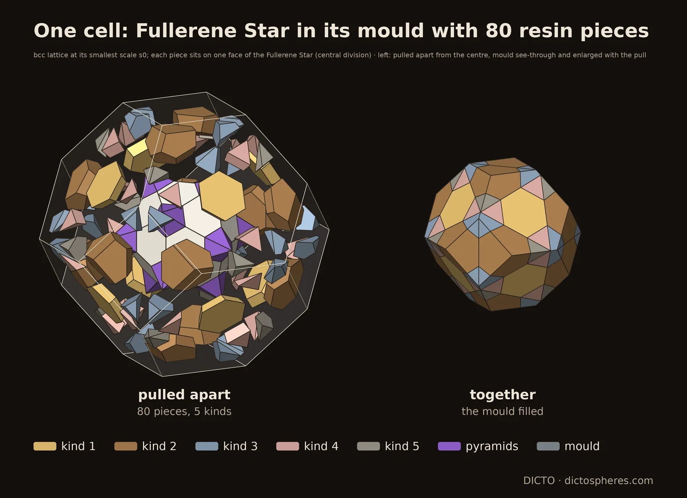
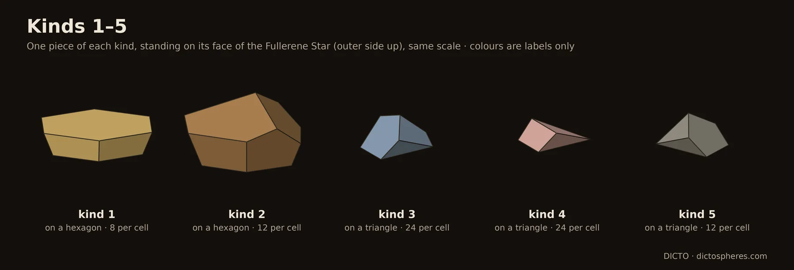
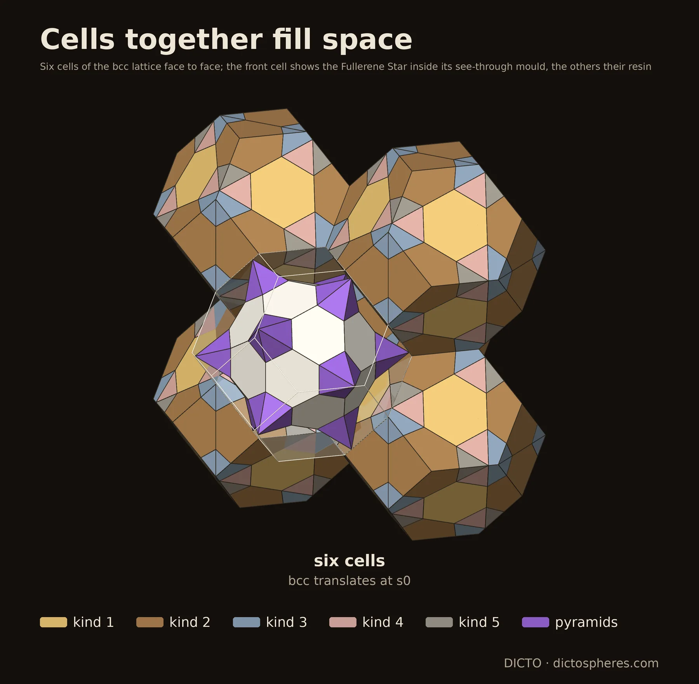
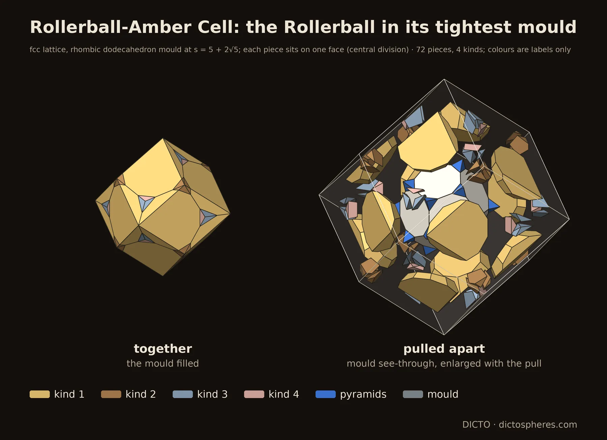
Remark 13 (scutoids in the resin). Exact for the central division; the face-normal division computed (same study, scripts/overlap.py). The central division gives no scutoid, in any arrangement: each side wall of a piece lies in a plane through the centre of Fullerene Star and one edge of Fullerene Star, so the piece across that wall is the same all the way out, and two such planes meet only along the ray through a vertex of Fullerene Star, so there is no Y-vertex. The pieces are frusta whose tops are cut by the mould. DICTO also proposed dividing along the face normals, with the bisector plane of each edge's dihedral angle as the wall. This is a tiling only in the simple cubic and body-centred arrangements at s0 (five kinds, no scutoid); elsewhere the hexagon pieces close over the hexagon with three Y-vertices, true scutoids, but exactly there the pieces of neighbouring faces overlap (depth 0.025 to 0.533), so it is not a division. The straight skeleton, in Theorem 14, settles this: it is a valid division, with scutoids.
Theorem 14 (the straight-skeleton division of the resin of the Fullerene-Amber Cell). Exact for Fullerene Star, in K = ℚ(√5, √3) (study scutoid-stand-in, branch D, scripts/skeleton2.py); computed (50 digits) for Rollerball. Move every face plane of Fullerene Star outward along its normal at unit speed, and let each face F sweep out the piece of F between the events of this wavefront and the mould. (i) The first event is at height t1 = (2 + √3)(√5 − 1)/4 ≈ 1.1533, where the 30 hexagon–hexagon edges shrink to points and, across each, a spike triangle of one pyramid meets a spike triangle of the neighbouring pyramid; the second is at t2 = (3 + 3√5 + 3√3 + √15)/4 ≈ 4.6943, where the hexagons on the 3-fold axes close. (ii) In each of the nine moulds (sc, bcc, fcc, each at s0, 6/5 s0, 3/2 s0) the pieces and Fullerene Star tile space: the volumes add up exactly, and every two pieces and every piece and part of Fullerene Star have a separating plane verified exactly in K. (iii) The pieces include true scutoids (a Y-vertex, with different neighbour sets on the Fullerene Star side and the mould side) exactly when an event point lies strictly inside the mould, that is for bcc when s > 6 + 3√3 − √15 ≈ 7.3232 (1.1597 s0), for sc when s > (3 + 3√5 − √3 + √15)/2 ≈ 5.9246 (1.0120 s0), and for fcc when s > 6 + 3√3 − √15 as well, which is 0.7731 s0, so at every valid fcc scale. Hence none at bcc s0 and sc s0; two kinds at bcc 6/5 s0, and all five at 3/2 s0; five kinds at sc 6/5 s0; two kinds at fcc s0 and five at larger scales. (iv) At bcc 6/5 s0 the two scutoid kinds are the 12 hexagon pieces (6 neighbours on Fullerene Star, 5 on the mould, one Y-vertex, on a coordinate axis) and one orbit of 24 triangle pieces (3 neighbours on Fullerene Star, 4 on the mould, one Y-vertex); the hexagons on the 3-fold axes and the other triangle pieces stay frusta, because their events lie outside the mould. (v) For the Rollerball (truncated dodecahedron with icosahedron centre pyramids) in its resin pieces inside the mould, a cell which DICTO names the Rollerball-Amber Cell, the same skeleton, computed to 50 digits, is a valid division in sc, bcc and fcc at s0 and 6/5 s0 (the volume gap below 10−46), with 4 kinds, all four of them scutoids (decagon pieces 10 → 5 neighbours with 5 Y-vertices, the three triangle kinds 3 → 5 with 2 Y-vertices); the first event is at 0.3748 and scutoids occur above 0.795 s0 (sc, bcc) and 0.711 s0 (fcc).
Let the faces of Fullerene Star grow outward; where two growing faces' edges close up, the pieces change neighbours, and that is a scutoid.
Proof. The unit normals of the hexagons are v/√3 with v in ℚ(√5)³, and those of the spike triangles lie in ℚ(√5)³, so every plane, wavefront vertex, event height and slab vertex lies in K and each decision is an exact sign in K. The height t1 is the exact solution of the 3 × 3 linear system at a hexagon–hexagon edge; the checks of (ii)–(iv) are in the log of round 3, which ends FINAL ok, and the vertices of one piece of each kind are in data/skeleton_exact.json. ∎ (The Rollerball statements are not proved: they rest on 50 digits, as the decagon normals need a field of degree 8.)
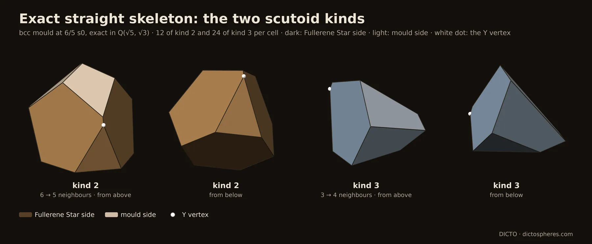
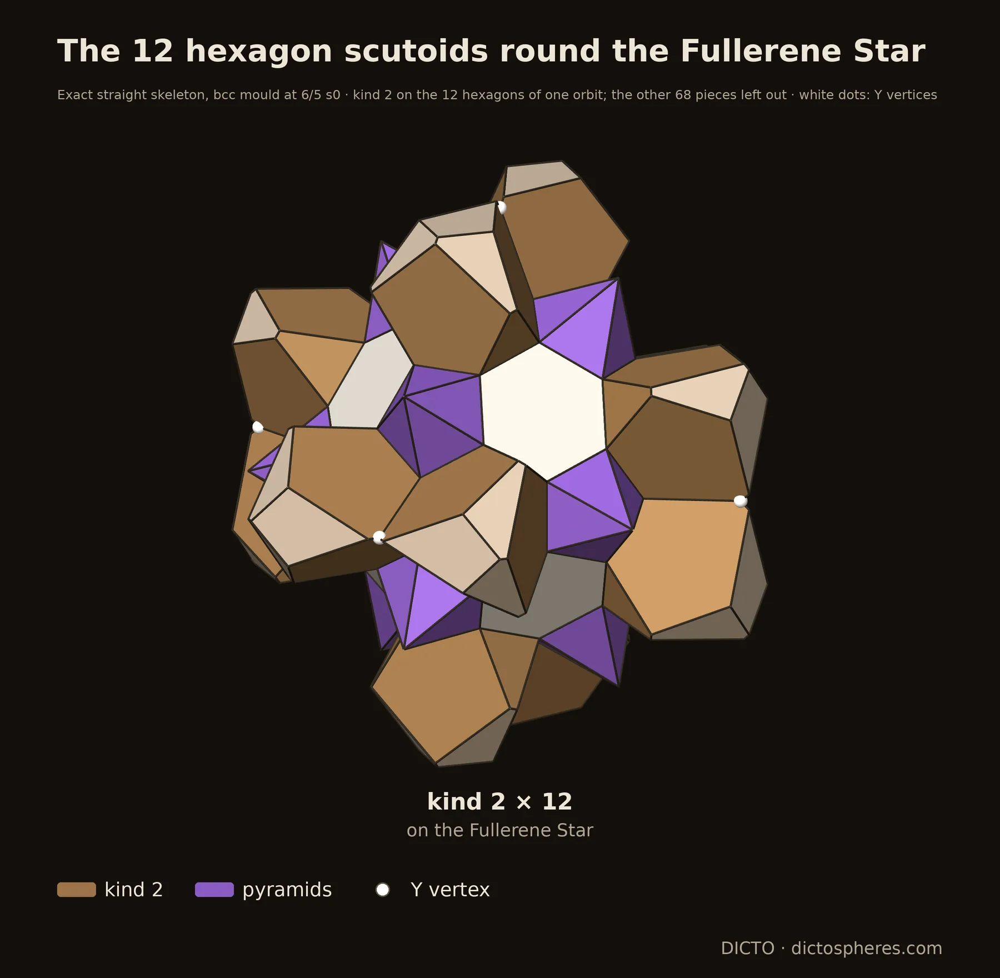
Theorem 15 (DICTO's combined method, in the Fullerene-Amber Cell). Exact in ℚ(√5) (study scutoid-stand-in, branch E, scripts/combi.py). DICTO proposed to fill the two ends in 2D and then cut the resin to fit. The inner end is the pattern of the 80 faces of Fullerene Star. The outer end is the Voronoi diagram, on the surface of the mould, of 80 seeds, the centroids of the faces of Fullerene Star. Where an inner edge and its outer partner join the same vertices the wall between them is kept; where the two patterns differ, the vertices are merged into one Y-vertex halfway between Fullerene Star and the mould, and a wall that is not flat is split into flat triangles. The result is a division of the resin into 80 pieces, one per face, whose boundaries are closed embedded surfaces, each of positive volume, each wall shared by exactly two pieces with opposite orientation, and whose volumes add up exactly to the resin (an independent sampling check of 1848 points found each covered once). The patterns differ only at hexagon–hexagon edges of Fullerene Star, where the two mould triangles beside the edge meet across it. All 80 pieces are true scutoids, in 5 kinds, at bcc 6/5 s0 (30 Y-vertices), at sc s0 (24) and at fcc s0 (30); at bcc s0 the division is valid with 36 of the 80 pieces scutoids (6 Y-vertices) and 44 without a Y-vertex. A piece has 5 to 38 flat faces, because the bent walls are split into triangles; 157.76° does not occur as an angle of any piece. Seeds taken as the centroids projected on the mould, from the centre or along the normal, gave a valid division only at bcc 6/5 s0 (72 of 80 scutoids) and otherwise pieces that cross themselves, which shows only that this cut does not work for them.
Draw the faces of Fullerene Star on its surface and the Voronoi cells of the mould on the other; the pieces between them are scutoids wherever the two drawings differ.
Proof. By the checks listed in the statement, run in ℚ(√5) (exact at the margin of the embedding test). A piece with a Y-vertex whose neighbours on the Fullerene Star side and on the mould side differ is a scutoid by definition. ∎
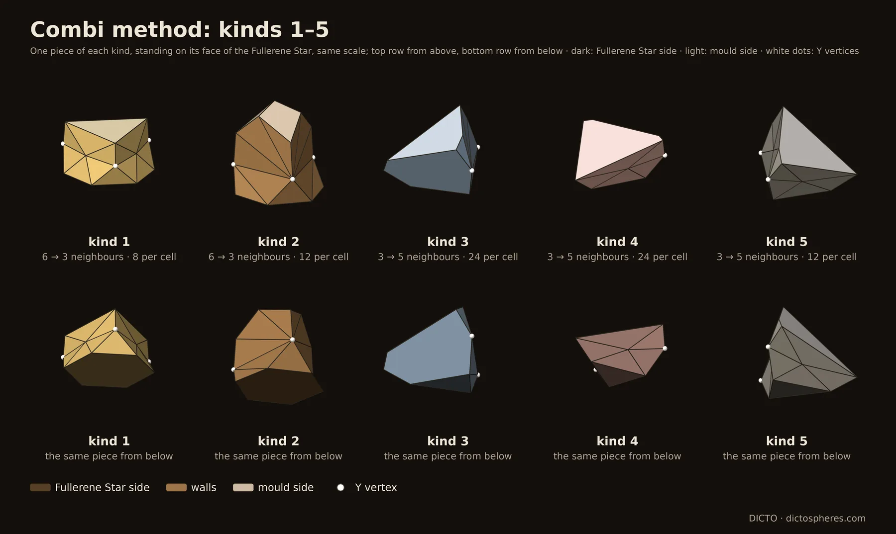
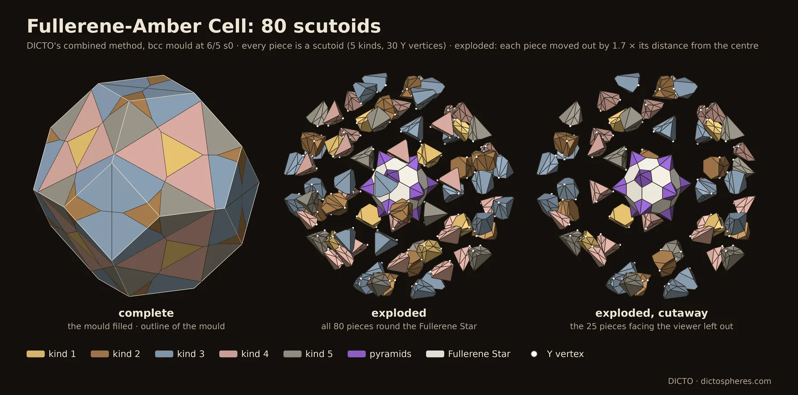
Remark 16 (what the scutoids mark). In the Fullerene-Amber Cell the resin is a transition layer. On its inner face the pattern is that of Fullerene Star, with five-fold and three-fold symmetry; on its outer face it is that of the mould, cubic. The pieces between must hand one pattern over to the other, and the neighbours of a piece change exactly where the patterns differ: in the skeleton division, where the hexagon–hexagon edges collapse inside the mould; in the combined method, at the same edges, where two triangles of the outer pattern meet across them. The scutoids sit at that handover and nowhere else: pieces whose neighbours do not change are frusta.
Proposition 17 (which solids give scutoids: the sweep). Computed: coordinates and volumes exact in ℚ(√5), embedding and sampling tests in floating point with exact fallback at the margin (study amber-cell-sweep, scripts/amber.py, logs ending FINAL ok). Run DICTO's combined method (Theorem 15, centroid seeds) for each solid in the three cubic moulds at 6/5 of the smallest scale s0 at which the solid lies in its Voronoi cell. Every run listed below is a valid division (volumes add up exactly, every wall is shared by two pieces, each resin point is covered once), hence a tiling, and 157.76° occurs as no angle. The pieces that are scutoids are exactly those over the places where the two patterns differ (Table 3).
| solid (edge 1) | moulds | kinds | scutoid pieces | Y-vertices |
|---|---|---|---|---|
| Fullerene Star | sc, bcc, fcc | 5 | 80 of 80 | 30 |
| Rollerball | sc, bcc, fcc | 4 | 72 of 72 | 30 |
| truncated dodecahedron alone | sc, bcc, fcc | 3 | 32 of 32 | 30 |
| icosidodecahedron | sc, bcc (fcc) | 3 | 20 of 32 (12 of 32) | 30 |
| dodecahedron + icosahedron compound | bcc, fcc | 6 | 60 of 120 | 30 |
| truncated icosahedron alone | sc, bcc, fcc | 3 | 0 of 32 | 0 |
| dodecahedron | sc, bcc, fcc | 1 | 0 of 12 | 0 |
| icosahedron | sc, bcc, fcc | 2 | 0 of 20 | 0 |
| rhombic triacontahedron | sc, bcc, fcc | 2 | 0 of 30 | 0 |
The scutoids occur where two large faces meet edge to edge (the 30 hexagon–hexagon edges of the Fullerene Star, the 30 decagon–decagon edges of the Rollerball and of the truncated dodecahedron) or at the four-valent vertices (the 30 vertices of the icosidodecahedron; the 30 crossing points of the compound); the pieces over them change neighbours and carry the Y-vertices, 30 per cell in each case.
Where the Y-vertices lie (exact test in ℚ(√5), study y-junction-axes, log ending FINAL ok; each Y-vertex tested against the 2-fold axes of the core, the cube axes, and the lines through edge midpoints). They do not always lie on two-fold axes:
| core | mould | Y-vertices on a two-fold axis of the core | the others |
|---|---|---|---|
| Rollerball, truncated dodecahedron, icosidodecahedron | bcc | all 30, two on each of the 15 axes | none |
| dodecahedron + icosahedron compound | bcc, fcc | all 30, two on each of the 15 axes | none |
| Rollerball, truncated dodecahedron, icosidodecahedron | sc, fcc | 6 (on the cube axes) | 24, off every two-fold axis by 0.5° to 2.7° (near, not on) |
| Fullerene Star (only 3 two-fold axes) | sc, bcc, fcc | 6, on the cube axes (at bcc s0 all 6 Y-vertices) | 24, well off the axes; 0.2° to 2.7° from a face-pair edge-midpoint line, not on it |
For the Rollerball and the truncated dodecahedron in bcc the 30 lie on the lines through the midpoints of edges between faces of the same kind; for the icosidodecahedron and the compound, on the axes through the four-valent vertices and the valley points. In the straight-skeleton division (Theorem 14) the Y-points of the Fullerene Star at bcc 6/5 s0 and fcc s0 all lie exactly on the cube axes, at the other scales some do not; the 11 listed Y-points of the Rollerball skeleton lie on icosahedral axes (50 digits). Whether the Y-vertices of any division are forced onto axes is open.
For the dodecahedron, the icosahedron, the rhombic triacontahedron and the truncated icosahedron alone, the pattern of faces already matches the Voronoi pattern of the face centroids, and every piece is a frustum. At s0 itself the cut fails for several solids (faces or edges lying on the mould, or a Y-vertex falling on the solid); these are failures of this cut rule, not proofs that no division exists.
The icosahedral solids that do not tile give scutoids where their large faces meet edge to edge; those whose faces already match the mould give none.
Remark 18 (real quasicrystal approximants). Computed; the comparison is geometric, not a claim about the physics (study scutoid-approximants, exact in ℚ(√5) for the divisions; atom positions from the crystal data). The 1/1 cubic approximants of the Tsai type and the Mackay type carry, on a body-centred cubic lattice, a cluster whose shell of 30 atoms is an icosidodecahedron with its two-fold axes on the cube axes. The four Tsai structures are Sc3Zn17.7 (COD 4101359 [18]), Yb24Cd113.8Mg31.4 (COD 2021894 [18]), Y24Cd109.9Mg35.3 (COD 2108845 [18]) and Cd6Yb (COD 1525048 [18]); the two Mackay structures are α-AlMnSi (Pm-3, COD 2007194 [18]) and Al–Cu–Fe–Si (Im-3, COD 1532186 [18]). Fitting the shell of each to the icosidodecahedron, the lattice parameter lies at 1.124 to 1.130 s0 for the Tsai structures and at 1.244 s0 for the Mackay structures, so the cluster fits its truncated-octahedron cell. At those real scales DICTO's combined method gives a valid division each time: 3 kinds, 20 of 32 pieces scutoids, 30 Y-vertices, all 30 exactly on the two-fold axes of the core; the Tsai scales lie between the s0 and the 6/5 s0 of Proposition 17, the Mackay scale above 6/5 s0. The Bergman 1/1 structure (Li–Mg–Zn–Al, COD 4319177 [18]) with its 32-atom triacontahedral shell gives a valid division with no scutoid; its 60-atom shell, and the triacontahedron round the icosidodecahedral shell of the Tsai structures, do not fit the cell (0.986 and 0.982 s0). The atoms do not mark the partition: no atom lies at a Y-vertex (the nearest is 2.1 to 3.0 Å away, among the emptier places of the resin) or, outside the core, on a two-fold axis; an atomic structure is a set of points and the division a partition of space.
The statement of Table 4 does not extend to every icosahedral core in a bcc mould. Take the icosidodecahedron capped by the twelve atoms on its five-fold axes (the convex hull of the icosidodecahedron and an icosahedron; still fully icosahedral, and the shell pair of the Mackay structures) in a bcc mould at the real scales: the division is valid, 5 kinds, 60 of 80 pieces scutoids (the 60 cap triangles), but only 6 of the 30 Y-vertices lie on two-fold axes and 24 are off them, by 0.0025 to 0.0054 Å in the real lattices (exact test).
Remark 19 (DICTO's shear ledger). The regular tetrahedron of edge a carries the packet D(T) = 6a ⊗ arccos(1/3). A volume-preserving shear is not a motion and can change the packet; DICTO proposed to read a sequence of shears as a ledger whose changes must add up to −D(T) to bring the tetrahedron to packet zero. Which shears spend the packet with the least shearing (fewest pieces, or least total shear) is open, and could be checked in Lean with the Dehn Canon's definitions [7].
Known and used. Dehn's invariant and theorem [1]; Jessen's tensor form [3]; Sydler's converse [4] (quoted, not used); Debrunner's theorem that a polyhedron which tiles space has zero invariant [5], and its extension by Lagarias and Moews [6] (both cited, not used in a proof); the angle count round an edge, DICTO's #44 Lemma 1 [8]; the B3 permutohedron's failure at its rectangle–octagon edge, #100 [9]; the rhombic dodecahedron pyramids' tiling, #93 [12]; scutoids, Gómez-Gálvez and co-workers [10], with flat faces in DICTO's #114 [11]; the honeycombs named in §4 (classical, as in the Dehn literature [2]). The classical solids and their dihedral angles are standard; the angles of Table 1 were recomputed exactly.
Claimed here, not found in the sources checked. DICTO's reading of the Dehn invariant as a packet to be balanced by a stand-in piece; the screen of the 47 centre pyramids against 80 pieces with its 97 exact cancellations and its classes (Proposition 6); the two icosahedral cancellations 12:1 and 20:1 and the tetrakis–truncated icosahedron cancellation 9:1; Theorem 4 and its smallest cancelling ring 3π; the compounds Fullerene Star and Rollerball and their edge demands (Proposition 7); the scutoid lemmas (Lemmas 8–10) the near miss of Remark 11, and the resin solution of Proposition 12.
Sources checked (21 November 2026). Y-vertices and axes: the exact check of study y-junction-axes (21 November 2026), Table 4. Approximants: study scutoid-approximants (21 November 2026): the seven COD files named in Remark 18; the arXiv paper 2108.03341 by Ishimasa, So and Mihalkovič was read in abstract only. Scutoid prior art: two web searches of 21 November 2026, for scutoids with polyhedra, space-filling and the Dehn invariant, and for scutoids and tessellation between surfaces, found Gómez-Gálvez et al. [10] and the Delaunay Lofts of Subramanian et al. [17] (PDF read), and no use of scutoids as stand-ins for a solid that does not fill space, and none with a packet. Lagarias and Moews [6]: the Crossref record and the Semantic Scholar record (title, authors, year; no abstract in either); the publisher's page and PDF could not be opened (sign-in redirect); zbMATH (Zbl 0824.52014) refused the request on this date; the statements quoted in DICTO's earlier prior-art record (study 2026-11-19-dehn-prior-art), from search snippets of the publisher's PDF and from Wikipedia, "Dehn invariant": "in dimension ≤ 4 a polytope that tiles by congruent copies is scissors congruent to a cube" and "every space-filling tile has zero invariant (Debrunner 1980; Lagarias–Moews 1995)". Debrunner [5]: only through these citations and through #44 and #100. Dehn [1], Jessen [3], Sydler [4]: as cited in #100, #113 and #116. The gap study of 21 November 2026 (study 2026-11-21-gap-study, REPORT.md) names Chentouf and Sun, arXiv:2312.01654, and Kedlaya, Kolpakov, Poonen and Rubinstein, arXiv:2011.14232 (space vectors forming rational angles), as prior art for Dehn counts of the classical solids; both seen there by title only, not read. DICTO's concordance (concordance.json) was searched for Fullerene Star, Rollerball and for named solids with pyramids on the pentagons of the truncated icosahedron (only the TI Star, on all 32 faces). The Vacuus record (study 2026-11-02-dicto-vacuus) was checked for further gap pieces with exact coordinates (none beyond the centre pyramids).
A solid carries its packet, and pieces that fill space together must bring packets that cancel; but cancelling in the whole is not enough. The packet must cancel edge by edge, inside one turn. Twelve dodecahedron centre pyramids cancel one truncated icosahedron exactly, and twenty icosahedron centre pyramids one truncated dodecahedron, yet the smallest ring in which their angles balance is one and a half turns, so they cannot fill space, with any of the helpers of Theorem 4. Glued, they return as solids of packet zero that need no partner for their packet, only a shape that closes their edges; a scutoid that does this would carry a spike-triangle face and a hexagon face meeting at about 21°.
Study packet-screen: scripts/nf.py, solids.py, angles.py, relations.py, screen.py, report.py (run in that order), data pieces.json, angles.json, relations.json, packets.json, leads.json, table.md, and logs ending FINAL ok. Study packet-leads-tiling: scripts/angles.py (exact angles and Lemma 3) and scripts/angle_test.py (controls, cheapest rings, pruning), with data/angles.json, data/angle_test.json and logs. Study scutoid-stand-in: scripts/compounds.py, rings.py, box.py, place.py, scutoid.py, round_trivial.py, round_local.py, with their data and logs. Beside this paper: scripts/fig_ring.py (Figure 1) and scripts/audit.py, which recomputes the angles, ring sums, packets and areas of the text from their exact forms, reads the counts of Proposition 6 from leads.json and packets.json, and checks that the study logs end with FINAL ok.
| solid, face | F | verdict |
|---|---|---|
| dodecahedron, pentagon | 12 | one: truncated icosahedron 12:1 |
| icosahedron, triangle | 20 | one: truncated dodecahedron 20:1 |
| cube, square | 6 | zero |
| tetrahedron, triangle | 4 | one (5): octahedron pyramid 1:1 |
| octahedron, triangle | 8 | one (5): tetrahedron pyramid 1:1 |
| truncated tetrahedron, triangle / hexagon | 4 / 4 | two: 5 / 5 |
| triakis tetrahedron, triangle | 12 | none |
| cuboctahedron, triangle | 8 | one (5): truncated tetrahedron 1:1 |
| cuboctahedron, square | 6 | one (5): tetrahedron 1:1 |
| rhombic dodecahedron, rhombus | 12 | zero |
| truncated cube, triangle / octagon | 8 / 6 | two: 5 / 5 |
| triakis octahedron, triangle | 24 | none |
| truncated octahedron, square / hexagon | 6 / 8 | one: the sibling pyramid, 3:4 / 4:3 |
| tetrakis hexahedron, triangle | 24 | one: truncated icosahedron 9:1 |
| rhombicuboctahedron, triangle / square | 8 / 18 | two: 5 / 5 |
| deltoidal icositetrahedron, kite | 24 | none |
| truncated cuboctahedron, square / hexagon / octagon | 12 / 8 / 6 | two: 1 / 1 / 1 (the sibling pyramids) |
| disdyakis dodecahedron, triangle | 48 | none |
| snub cube, triangle / square | 32 / 6 | none / none |
| pentagonal icositetrahedron, pentagon | 24 | none |
| icosidodecahedron, triangle | 20 | two: 21 (all at irrational scale ratios) |
| icosidodecahedron, pentagon | 12 | one: truncated icosahedron, at an irrational scale only |
| rhombic triacontahedron, rhombus | 30 | zero |
| truncated dodecahedron, triangle / decagon | 20 / 12 | two: 2 / 2 |
| triakis icosahedron, triangle | 60 | none |
| truncated icosahedron, pentagon / hexagon | 12 / 20 | two: 5 / 5 |
| pentakis dodecahedron, triangle | 60 | none |
| rhombicosidodecahedron, triangle / square / pentagon | 20 / 30 / 12 | none / none / none |
| deltoidal hexecontahedron, kite | 60 | none |
| truncated icosidodecahedron, square / hexagon / decagon | 30 / 20 / 12 | two: 1 / 1 / 1 (the sibling pyramids) |
| disdyakis triacontahedron, triangle | 120 | none |
| snub dodecahedron, triangle / pentagon | 80 / 12 | none / none |
| pentagonal hexecontahedron, pentagon | 60 | none |
DICTO · dictospheres.com